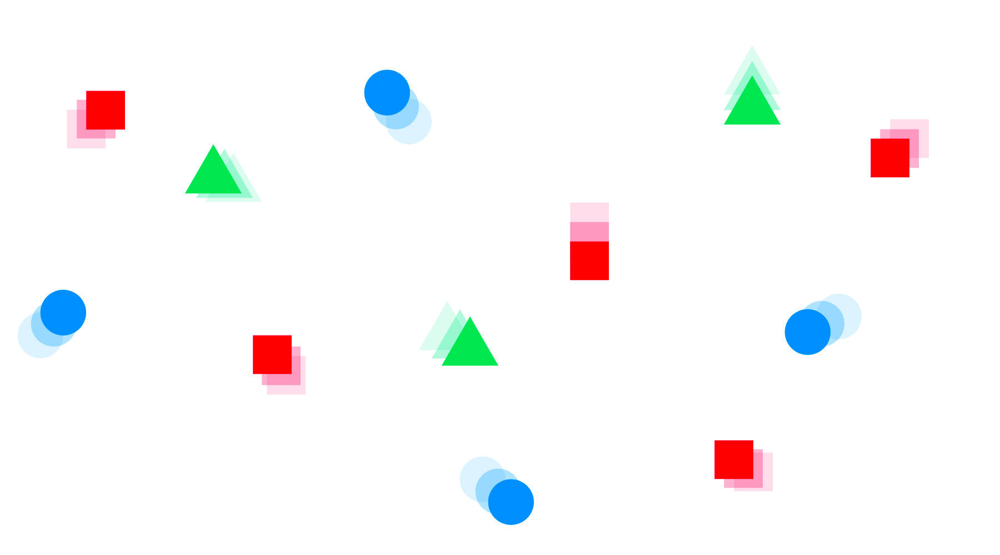

Using Objects
If you load the file index.html in the browser, you'll see we currently have an empty scene. We need to create our first organisms, and we'll be doing this using javascript objects.
Object Types
Our scene will be made up of several types of organism, but there will be many instances of each organism type.
Each instance will act as an individual, it'll have its own position on the screen, and it will be performing its own movement and actions independent of the others.
We can achieve this in javascript by creating object types - this means writing a function that constructs an object, which we can treat a bit like a reusable template.
function Person(firstName, lastName) {
this.firstName = firstName;
this.lastName = lastName;
}
The above example is a constructor function for a type of object we've called Person, and it has two properties, firstName and lastName. We can then create instances of this object like:
var character = new Person('Edith','Holland');
So here we've created a variable called character and used the keyword new to construct an instance of the object type Person.
When dealing with objects we use . to reference a property of that object, such as character.firstName. In the constructor function for Person you'll see the keyword this. We use this when an object refers to a property belonging to itself.
Methods
As well as properties, objects can have methods. Methods are actions that can be performed on an object type. When you write console.log( 'hello' ); you are calling a method named log which belongs to an object named console.
Person.prototype.fullName = function() {
return this.firstName + ' ' + this.lastName;
}
The above example may look a little strange, we won't get into the details of prototype here, but essentially this creates a method called fullName which belongs to the object type Person. This method returns a combined string of both firstName and lastName (with a space between), and its available to any instances of Person. We could call it on character like this:
character.fullName();
If you like, try opening the console and pasting in the above code snippets, maybe create some extra characters of your own and have a play. Don't worry about spending too much time on this section though, you can always come back to it for further understanding. Next let's get straight on with creating!